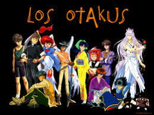

Definicion
Origen: El termino Otaku proviene de Japón. En la cultura japonesa, esta palabra se refiere a las personas con demasiada obsesión por algo (una afición, un juego, un grupo de música...).
Generalmente, los otakus suelen ser fańaticos del anime, el manga, los videojuegos o la informática. La palabra "otaku" surgió en los años 80, donde en una serie de anime se refería como "otaku" a uno de los personajes.
Si extendemos la definición de otaku fuera de la cultura japonesa, podemos incluir en esta categoría también los fans de videojuegos, series y peliculas "de culto" que conocen las escenas y el argumento de memoria y se sienten plenamente identificados con los personajes y con el mundo fantástico que se muestra. Es por esto, que se podría decir que los otakus tienen ciertas características similares con los geeks.